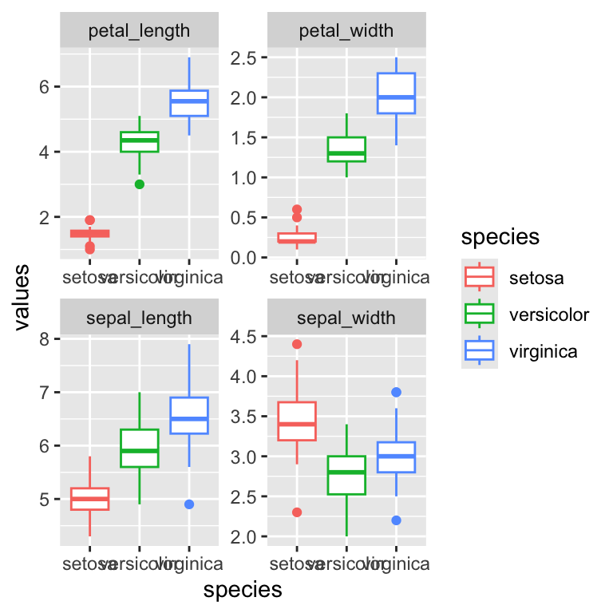
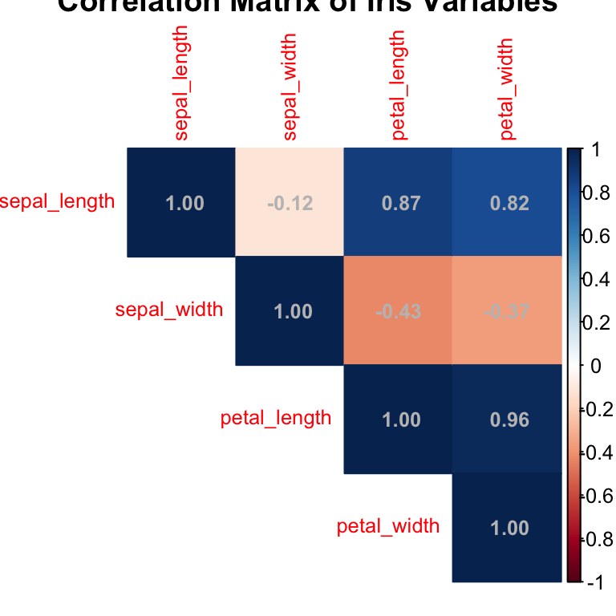
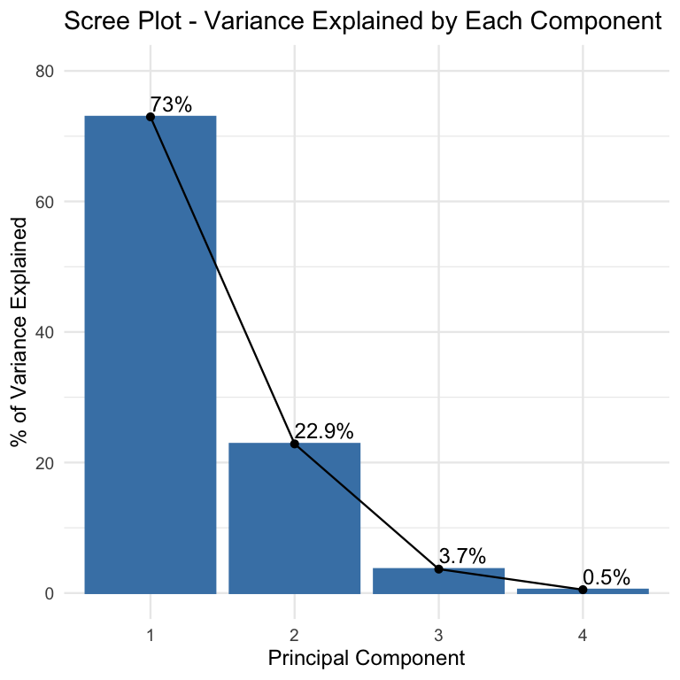
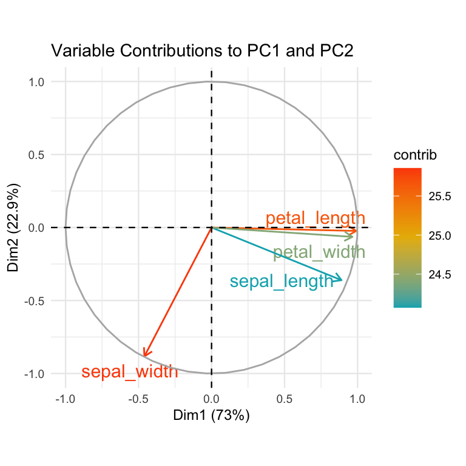
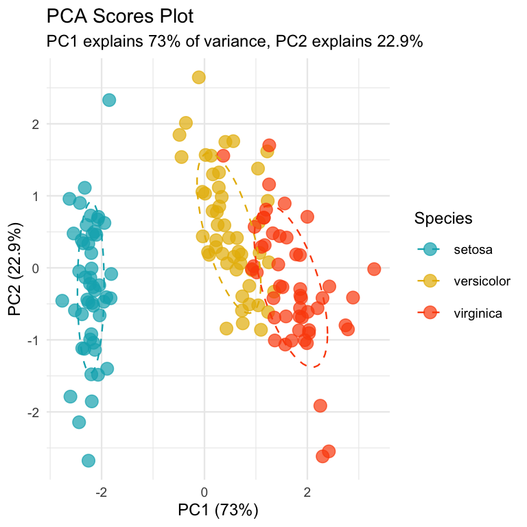
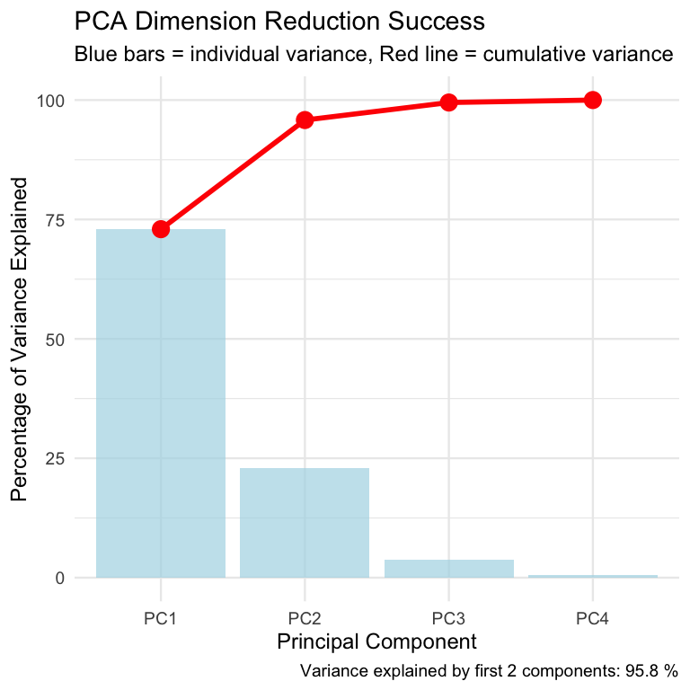

# Load the iris dataset
iris_df <- iris %>% clean_names() %>% mutate(ind = row_number()) %>%
mutate(species_ind = paste(species, ind, sep="_"))
# get values only
iris_data <- iris_df %>% select(-species, -ind, -species_ind)
# Keep species for later visualization
iris_species <- iris_df %>% select(species, ind, species_ind)
# pivot to long formt for viewing
iris_long_df <- iris_df %>%
pivot_longer(
cols = -c(species, ind, species_ind),
names_to = "variable",
values_to = "values")
iris_df
## sepal_length sepal_width petal_length petal_width species ind
## 1 5.1 3.5 1.4 0.2 setosa 1
## 2 4.9 3.0 1.4 0.2 setosa 2
## 3 4.7 3.2 1.3 0.2 setosa 3
## 4 4.6 3.1 1.5 0.2 setosa 4
## 5 5.0 3.6 1.4 0.2 setosa 5
## 6 5.4 3.9 1.7 0.4 setosa 6
## 7 4.6 3.4 1.4 0.3 setosa 7
## 8 5.0 3.4 1.5 0.2 setosa 8
## 9 4.4 2.9 1.4 0.2 setosa 9
## 10 4.9 3.1 1.5 0.1 setosa 10
## 11 5.4 3.7 1.5 0.2 setosa 11
## 12 4.8 3.4 1.6 0.2 setosa 12
## 13 4.8 3.0 1.4 0.1 setosa 13
## 14 4.3 3.0 1.1 0.1 setosa 14
## 15 5.8 4.0 1.2 0.2 setosa 15
## 16 5.7 4.4 1.5 0.4 setosa 16
## 17 5.4 3.9 1.3 0.4 setosa 17
## 18 5.1 3.5 1.4 0.3 setosa 18
## 19 5.7 3.8 1.7 0.3 setosa 19
## 20 5.1 3.8 1.5 0.3 setosa 20
## 21 5.4 3.4 1.7 0.2 setosa 21
## 22 5.1 3.7 1.5 0.4 setosa 22
## 23 4.6 3.6 1.0 0.2 setosa 23
## 24 5.1 3.3 1.7 0.5 setosa 24
## 25 4.8 3.4 1.9 0.2 setosa 25
## 26 5.0 3.0 1.6 0.2 setosa 26
## 27 5.0 3.4 1.6 0.4 setosa 27
## 28 5.2 3.5 1.5 0.2 setosa 28
## 29 5.2 3.4 1.4 0.2 setosa 29
## 30 4.7 3.2 1.6 0.2 setosa 30
## 31 4.8 3.1 1.6 0.2 setosa 31
## 32 5.4 3.4 1.5 0.4 setosa 32
## 33 5.2 4.1 1.5 0.1 setosa 33
## 34 5.5 4.2 1.4 0.2 setosa 34
## 35 4.9 3.1 1.5 0.2 setosa 35
## 36 5.0 3.2 1.2 0.2 setosa 36
## 37 5.5 3.5 1.3 0.2 setosa 37
## 38 4.9 3.6 1.4 0.1 setosa 38
## 39 4.4 3.0 1.3 0.2 setosa 39
## 40 5.1 3.4 1.5 0.2 setosa 40
## 41 5.0 3.5 1.3 0.3 setosa 41
## 42 4.5 2.3 1.3 0.3 setosa 42
## 43 4.4 3.2 1.3 0.2 setosa 43
## 44 5.0 3.5 1.6 0.6 setosa 44
## 45 5.1 3.8 1.9 0.4 setosa 45
## 46 4.8 3.0 1.4 0.3 setosa 46
## 47 5.1 3.8 1.6 0.2 setosa 47
## 48 4.6 3.2 1.4 0.2 setosa 48
## 49 5.3 3.7 1.5 0.2 setosa 49
## 50 5.0 3.3 1.4 0.2 setosa 50
## 51 7.0 3.2 4.7 1.4 versicolor 51
## 52 6.4 3.2 4.5 1.5 versicolor 52
## 53 6.9 3.1 4.9 1.5 versicolor 53
## 54 5.5 2.3 4.0 1.3 versicolor 54
## 55 6.5 2.8 4.6 1.5 versicolor 55
## 56 5.7 2.8 4.5 1.3 versicolor 56
## 57 6.3 3.3 4.7 1.6 versicolor 57
## 58 4.9 2.4 3.3 1.0 versicolor 58
## 59 6.6 2.9 4.6 1.3 versicolor 59
## 60 5.2 2.7 3.9 1.4 versicolor 60
## 61 5.0 2.0 3.5 1.0 versicolor 61
## 62 5.9 3.0 4.2 1.5 versicolor 62
## 63 6.0 2.2 4.0 1.0 versicolor 63
## 64 6.1 2.9 4.7 1.4 versicolor 64
## 65 5.6 2.9 3.6 1.3 versicolor 65
## 66 6.7 3.1 4.4 1.4 versicolor 66
## 67 5.6 3.0 4.5 1.5 versicolor 67
## 68 5.8 2.7 4.1 1.0 versicolor 68
## 69 6.2 2.2 4.5 1.5 versicolor 69
## 70 5.6 2.5 3.9 1.1 versicolor 70
## 71 5.9 3.2 4.8 1.8 versicolor 71
## 72 6.1 2.8 4.0 1.3 versicolor 72
## 73 6.3 2.5 4.9 1.5 versicolor 73
## 74 6.1 2.8 4.7 1.2 versicolor 74
## 75 6.4 2.9 4.3 1.3 versicolor 75
## 76 6.6 3.0 4.4 1.4 versicolor 76
## 77 6.8 2.8 4.8 1.4 versicolor 77
## 78 6.7 3.0 5.0 1.7 versicolor 78
## 79 6.0 2.9 4.5 1.5 versicolor 79
## 80 5.7 2.6 3.5 1.0 versicolor 80
## 81 5.5 2.4 3.8 1.1 versicolor 81
## 82 5.5 2.4 3.7 1.0 versicolor 82
## 83 5.8 2.7 3.9 1.2 versicolor 83
## 84 6.0 2.7 5.1 1.6 versicolor 84
## 85 5.4 3.0 4.5 1.5 versicolor 85
## 86 6.0 3.4 4.5 1.6 versicolor 86
## 87 6.7 3.1 4.7 1.5 versicolor 87
## 88 6.3 2.3 4.4 1.3 versicolor 88
## 89 5.6 3.0 4.1 1.3 versicolor 89
## 90 5.5 2.5 4.0 1.3 versicolor 90
## 91 5.5 2.6 4.4 1.2 versicolor 91
## 92 6.1 3.0 4.6 1.4 versicolor 92
## 93 5.8 2.6 4.0 1.2 versicolor 93
## 94 5.0 2.3 3.3 1.0 versicolor 94
## 95 5.6 2.7 4.2 1.3 versicolor 95
## 96 5.7 3.0 4.2 1.2 versicolor 96
## 97 5.7 2.9 4.2 1.3 versicolor 97
## 98 6.2 2.9 4.3 1.3 versicolor 98
## 99 5.1 2.5 3.0 1.1 versicolor 99
## 100 5.7 2.8 4.1 1.3 versicolor 100
## 101 6.3 3.3 6.0 2.5 virginica 101
## 102 5.8 2.7 5.1 1.9 virginica 102
## 103 7.1 3.0 5.9 2.1 virginica 103
## 104 6.3 2.9 5.6 1.8 virginica 104
## 105 6.5 3.0 5.8 2.2 virginica 105
## 106 7.6 3.0 6.6 2.1 virginica 106
## 107 4.9 2.5 4.5 1.7 virginica 107
## 108 7.3 2.9 6.3 1.8 virginica 108
## 109 6.7 2.5 5.8 1.8 virginica 109
## 110 7.2 3.6 6.1 2.5 virginica 110
## 111 6.5 3.2 5.1 2.0 virginica 111
## 112 6.4 2.7 5.3 1.9 virginica 112
## 113 6.8 3.0 5.5 2.1 virginica 113
## 114 5.7 2.5 5.0 2.0 virginica 114
## 115 5.8 2.8 5.1 2.4 virginica 115
## 116 6.4 3.2 5.3 2.3 virginica 116
## 117 6.5 3.0 5.5 1.8 virginica 117
## 118 7.7 3.8 6.7 2.2 virginica 118
## 119 7.7 2.6 6.9 2.3 virginica 119
## 120 6.0 2.2 5.0 1.5 virginica 120
## 121 6.9 3.2 5.7 2.3 virginica 121
## 122 5.6 2.8 4.9 2.0 virginica 122
## 123 7.7 2.8 6.7 2.0 virginica 123
## 124 6.3 2.7 4.9 1.8 virginica 124
## 125 6.7 3.3 5.7 2.1 virginica 125
## 126 7.2 3.2 6.0 1.8 virginica 126
## 127 6.2 2.8 4.8 1.8 virginica 127
## 128 6.1 3.0 4.9 1.8 virginica 128
## 129 6.4 2.8 5.6 2.1 virginica 129
## 130 7.2 3.0 5.8 1.6 virginica 130
## 131 7.4 2.8 6.1 1.9 virginica 131
## 132 7.9 3.8 6.4 2.0 virginica 132
## 133 6.4 2.8 5.6 2.2 virginica 133
## 134 6.3 2.8 5.1 1.5 virginica 134
## 135 6.1 2.6 5.6 1.4 virginica 135
## 136 7.7 3.0 6.1 2.3 virginica 136
## 137 6.3 3.4 5.6 2.4 virginica 137
## 138 6.4 3.1 5.5 1.8 virginica 138
## 139 6.0 3.0 4.8 1.8 virginica 139
## 140 6.9 3.1 5.4 2.1 virginica 140
## 141 6.7 3.1 5.6 2.4 virginica 141
## 142 6.9 3.1 5.1 2.3 virginica 142
## 143 5.8 2.7 5.1 1.9 virginica 143
## 144 6.8 3.2 5.9 2.3 virginica 144
## 145 6.7 3.3 5.7 2.5 virginica 145
## 146 6.7 3.0 5.2 2.3 virginica 146
## 147 6.3 2.5 5.0 1.9 virginica 147
## 148 6.5 3.0 5.2 2.0 virginica 148
## 149 6.2 3.4 5.4 2.3 virginica 149
## 150 5.9 3.0 5.1 1.8 virginica 150
## species_ind
## 1 setosa_1
## 2 setosa_2
## 3 setosa_3
## 4 setosa_4
## 5 setosa_5
## 6 setosa_6
## 7 setosa_7
## 8 setosa_8
## 9 setosa_9
## 10 setosa_10
## 11 setosa_11
## 12 setosa_12
## 13 setosa_13
## 14 setosa_14
## 15 setosa_15
## 16 setosa_16
## 17 setosa_17
## 18 setosa_18
## 19 setosa_19
## 20 setosa_20
## 21 setosa_21
## 22 setosa_22
## 23 setosa_23
## 24 setosa_24
## 25 setosa_25
## 26 setosa_26
## 27 setosa_27
## 28 setosa_28
## 29 setosa_29
## 30 setosa_30
## 31 setosa_31
## 32 setosa_32
## 33 setosa_33
## 34 setosa_34
## 35 setosa_35
## 36 setosa_36
## 37 setosa_37
## 38 setosa_38
## 39 setosa_39
## 40 setosa_40
## 41 setosa_41
## 42 setosa_42
## 43 setosa_43
## 44 setosa_44
## 45 setosa_45
## 46 setosa_46
## 47 setosa_47
## 48 setosa_48
## 49 setosa_49
## 50 setosa_50
## 51 versicolor_51
## 52 versicolor_52
## 53 versicolor_53
## 54 versicolor_54
## 55 versicolor_55
## 56 versicolor_56
## 57 versicolor_57
## 58 versicolor_58
## 59 versicolor_59
## 60 versicolor_60
## 61 versicolor_61
## 62 versicolor_62
## 63 versicolor_63
## 64 versicolor_64
## 65 versicolor_65
## 66 versicolor_66
## 67 versicolor_67
## 68 versicolor_68
## 69 versicolor_69
## 70 versicolor_70
## 71 versicolor_71
## 72 versicolor_72
## 73 versicolor_73
## 74 versicolor_74
## 75 versicolor_75
## 76 versicolor_76
## 77 versicolor_77
## 78 versicolor_78
## 79 versicolor_79
## 80 versicolor_80
## 81 versicolor_81
## 82 versicolor_82
## 83 versicolor_83
## 84 versicolor_84
## 85 versicolor_85
## 86 versicolor_86
## 87 versicolor_87
## 88 versicolor_88
## 89 versicolor_89
## 90 versicolor_90
## 91 versicolor_91
## 92 versicolor_92
## 93 versicolor_93
## 94 versicolor_94
## 95 versicolor_95
## 96 versicolor_96
## 97 versicolor_97
## 98 versicolor_98
## 99 versicolor_99
## 100 versicolor_100
## 101 virginica_101
## 102 virginica_102
## 103 virginica_103
## 104 virginica_104
## 105 virginica_105
## 106 virginica_106
## 107 virginica_107
## 108 virginica_108
## 109 virginica_109
## 110 virginica_110
## 111 virginica_111
## 112 virginica_112
## 113 virginica_113
## 114 virginica_114
## 115 virginica_115
## 116 virginica_116
## 117 virginica_117
## 118 virginica_118
## 119 virginica_119
## 120 virginica_120
## 121 virginica_121
## 122 virginica_122
## 123 virginica_123
## 124 virginica_124
## 125 virginica_125
## 126 virginica_126
## 127 virginica_127
## 128 virginica_128
## 129 virginica_129
## 130 virginica_130
## 131 virginica_131
## 132 virginica_132
## 133 virginica_133
## 134 virginica_134
## 135 virginica_135
## 136 virginica_136
## 137 virginica_137
## 138 virginica_138
## 139 virginica_139
## 140 virginica_140
## 141 virginica_141
## 142 virginica_142
## 143 virginica_143
## 144 virginica_144
## 145 virginica_145
## 146 virginica_146
## 147 virginica_147
## 148 virginica_148
## 149 virginica_149
## 150 virginica_150Lecture: Principal Component Analysis
Ordination
Multivariate
PCA
Principal Component Analysis (PCA) for multivariate data — eigenvalues, eigenvectors, standardization, scree plots, loadings, and biplots, worked through step-by-step on the classic iris flower dataset.
Part 1 · Review: Eigenvectors, Eigenvalues, Components
Review: Multivariate Statistics Overview
Review
- Multivariate data
- Multivariate statistics in ecology: overview
- Eigenvectors, eigenvalues, components
- Distance and dissimilarity in MV space
- Data standardization
- Graphics
- Screening MV data
- MANOVA

Review: Eigenvectors and Components
Eigenvectors, eigenvalues and components
Common goal of MV analysis is variable reduction: can we derive new variables (based on linear combinations of “original” variables) that explain variation in data?
For data set with i= 1 to n objects and j = 1 to p original variables we seek new variables (principal components) using the equation:
\[z_{ik} = c_1y_{i1} + c_2y_{i2} + \cdots c_jy_{ij} + \cdots + c_py_{ip}\]
Review: Component Interpretation
- zik is value of new variable k for object I
- yi1- yip are values of original variables for object i
- c1-cp are coefficients that show importance of the original variables to new derived variable
\[z_{ik} = c_1y_{i1} + c_2y_{i2} + \cdots c_jy_{ij} + \cdots + c_py_{ip}\]
Review: Component Properties
Eigenvectors, eigenvalues and components
Derived variables are found so that:
- First derived variable explains most of the variation in the data
- Second most of the remaining variation
- And so on…
- As many derived variables as original variables (p)
- Derived variables are uncorrelated with each other

Review: Eigenvalues and Eigenvectors
Eigenvectors, eigenvalues and components
- Eigenvalues (latent roots) represent amount of variation in data explained by the new k= 1 to p derived variables (λ1, λ2 …λp).
- Eigenvalues are population parameters and are estimated using ML to get sample statistics (l1, l2…lp)
- Eigenvectors are lists of coefficients (c) that show contribution of original variables to new, derived variables
- Each new variable has an eigenvalue and an eigenvector
- New variables (components) are derived from a p x p covariance or correlation matrix of original variables
Part 2 · PCA Goals and Introduction
PCA Goals and Introduction
- Common goals of MV data analysis are variable reduction (finding derived variables that summarize data) and exploration of patterns in data (scaling/ordination)
- Can use association (correlation/ covariance) matrices (PCA) or dissimilarity measures (MDS)
- In PCA: take p old variables and transform them into p “new/derived” uncorrelated variables (principal components)
Note
Gotelli & Ellison, A Primer of Ecological Statistics, Ch. 12 — The Analysis of Multivariate Data, is the core reference for PCA.
Data for PCA Analysis
Step 1: Explore the Iris Dataset
As in every case you should be looking at the data first - every time…
Right is the data on iris from a long dataframe
overview_plot <- iris_long_df %>%
ggplot(aes(species, values, color=species)) +
geom_boxplot() +
facet_wrap(~variable, scales = "free")
overview_plot
What is PCA? Goals and Overview
Principal Component Analysis Goals:
- Variable Reduction: Transform many correlated variables into fewer uncorrelated components
- Data Exploration: Visualize patterns and relationships in high-dimensional data
- Noise Reduction: Focus on the most important sources of variation
- Dimension Reduction: Make complex datasets easier to analyze and interpret
Today’s Example: Iris flower measurements - can we reduce 4 measurements to 2-3 components that capture most variation?

High-Dimensional Data Visualization
Principal Component Analysis Goals:
- Variable Reduction: Transform many correlated variables into fewer uncorrelated components
- Data Exploration: Visualize patterns and relationships in high-dimensional data
- Noise Reduction: Focus on the most important sources of variation
- Dimension Reduction: Make complex datasets easier to analyze and interpret
Today’s Example: Iris flower measurements - can we reduce 4 measurements to fewer components that capture most variation?
Part 3 · Assumptions and Standardization
PCA Assumptions - Critical to Check First!
Key Assumptions:
- Linear relationships between variables
- No extreme outliers (can distort results)
- Variables should be correlated (if not, PCA won’t reduce dimensions)
- Adequate sample size (generally n > 50, preferably n > 100)
- No missing data (complete cases only)
- Consider standardization when variables have different scales
Important: PCA works best when original variables are moderately to highly correlated!
Let’s check these assumptions with our iris data…
Step 2: Check PCA Assumptions - Correlations
## [1] "Correlation Matrix:"
## sepal_length sepal_width petal_length petal_width
## sepal_length 1.000 -0.118 0.872 0.818
## sepal_width -0.118 1.000 -0.428 -0.366
## petal_length 0.872 -0.428 1.000 0.963
## petal_width 0.818 -0.366 0.963 1.000
Step 2: Check PCA Assumptions - Linearity

Step 2: Check PCA Assumptions - Outliers

Step 3: Standardize the Data
STANDARDIZATION: Making all variables comparable
Why standardize?
Our measurements have different units and scales:
- Sepal length: ranges from ~4-8 cm
- Sepal width: ranges from ~2-4 cm
- Petal length: ranges from ~1-7 cm
- Petal width: ranges from ~0.1-2.5 cm
Without standardization, PCA would be dominated by variables with larger numbers (like petal length) simply because they have bigger values, not because they’re more important biologically
What does standardization do?
- Converts each variable to have:
- Mean = 0 (centered at zero)
- Standard deviation = 1 (same spread)
- This gives all variables equal weight in the analysis
How to interpret standardized values: Example: A sepal length of 5.1 cm might become -0.9 after standardization, meaning it’s 0.9 standard deviations below the average sepal length
## [1] "Means after standardization (should be ~0):"
## sepal_length sepal_width petal_length petal_width
## 0 0 0 0
## [1] "Standard deviations after standardization (should be 1):"
## sepal_length sepal_width petal_length petal_width
## 1 1 1 1Part 4 · Running PCA and Eigen-decomposition
Step 4: Perform PCA - The Mathematics
What is PCA doing?
Principal Component Analysis finds new variables (called components) that capture the most variation in your data. Think of it as finding the “best viewing angles” to see differences between flowers.
The mathematics (simplified):
- PCA rotates your data to find the direction with maximum spread (PC1)
- Then finds the next direction with maximum spread perpendicular to PC1 (PC2)
- Continues until it has as many components as original variables (4 in our case)
Why center = FALSE and scale = FALSE?
We already standardized our data in Step 3, so we tell R not to do it again: - center = FALSE: Don’t subtract the mean (we already did) - scale = FALSE: Don’t divide by standard deviation (we already did)
What the summary shows:
- Standard deviation: How much variation each component captures
- Proportion of Variance: Percentage of total variation explained by each component
- Cumulative Proportion: Running total of variance explained
# Perform PCA on standardized data
iris_pca <- prcomp(iris_scaled, center = FALSE, scale. = FALSE)
# Note: center and scale are FALSE because we already standardized
# Alternative using vegan package
iris_pca_vegan <- rda(iris_scaled)
# Summary of PCA results
summary(iris_pca)
## Importance of components:
## PC1 PC2 PC3 PC4
## Standard deviation 1.7084 0.9560 0.38309 0.14393
## Proportion of Variance 0.7296 0.2285 0.03669 0.00518
## Cumulative Proportion 0.7296 0.9581 0.99482 1.00000Deriving Components: 2D Visualization
How are new uncorrelated components derived? One way to think it is in terms of axis rotation Consider a 2-variable dataset:

Component Derivation: Axis Rotation
Goal is to “rotate the axes” around center of the data “cloud” in such a way that most of the variation lies along the first axis Then find second axis that explains the second-most variation AND is orthogonal to first axis

Component Derivation: Multivariate Extension
Easy to picture in 2D (or even 3D), but harder in multivariate space Practically, components are “extracted” from a covariance of correlation matrix among original variables Will extract as many principal components as original variables

Component Information: Eigenvalues and Eigenvectors
- Get two important pieces of information from PCA: eigenvectors and eigenvalues
- Eigenvalues (latent roots)- how much of the variation is explained by each component?
- Eigenvectors- list of coefficients for original variables. There are p coefficients in an eigenvector and p eigenvectors
- Correlation bw original variables will result in fewer components explaining more variance; variable reduction will fail if original variables are not correlated
Step 4: Understanding Eigenvalues and Variance
Understanding Eigenvalues and Variance
What are eigenvalues?
- Eigenvalues tell us how much variation each principal component captures.
- Larger eigenvalues = more important components.
Key terms explained:
- Eigenvalue: The amount of variance captured by each component (always positive)
- Proportion of Variance: What percentage of total variation this component explains
- Cumulative Variance: Running total - helps us decide how many components we need
How to read the results:
- If PC1 has eigenvalue = 2.9, it captures 2.9 “units” of variance
- If Prop_Variance = 0.728, PC1 explains 72.8% of all variation in the data
- If Cumsum_Variance = 0.959 at PC2, the first 2 components together explain 95.9% of variation
Why this matters:
This table helps us decide how many components to keep.
- If 2 components explain 95% of variance, we’ve successfully reduced 4 variables to 2
- We only lose 5% of information without including the other variables!
# Extract eigenvalues (variance explained by each component)
eigenvalues <- iris_pca$sdev^2
prop_variance <- eigenvalues / sum(eigenvalues)
cumsum_variance <- cumsum(prop_variance)
# Create a summary table
pca_summary <- data.frame(
Component = paste0("PC", 1:length(eigenvalues)),
Eigenvalue = eigenvalues,
Prop_Variance = prop_variance,
Cumsum_Variance = cumsum_variance
)
print("PCA Summary:")
## [1] "PCA Summary:"
kable(pca_summary, digits = 3)| Component | Eigenvalue | Prop_Variance | Cumsum_Variance |
|---|---|---|---|
| PC1 | 2.918 | 0.730 | 0.730 |
| PC2 | 0.914 | 0.229 | 0.958 |
| PC3 | 0.147 | 0.037 | 0.995 |
| PC4 | 0.021 | 0.005 | 1.000 |
Part 5 · Choosing How Many Components
Step 5: Determine Number of Components - Scree Plot
What is a Scree Plot?
A scree plot shows how much variance each component explains, helping us decide how many components we need. The name comes from the geological term “scree” - loose rocks at the base of a cliff - because the plot often looks like a steep cliff followed by rubble.
How to read a Scree Plot:
- Y-axis: Percentage of variance explained by each component
- X-axis: Component number (PC1, PC2, etc.)
- The pattern: Usually shows a steep drop followed by a leveling off
The “Elbow Method”:
Look for where the line “bends” or forms an elbow:
- Components before the elbow = important (steep slope)
- Components after the elbow = less important (gentle slope)
- Keep components up to and including the elbow
What to look for in our plot:
- If PC1 explains 70% and PC2 explains 20%, but PC3 only explains 5%, the elbow is at PC2
- This suggests keeping the first 2 components
- The dramatic drop from PC1 to PC2, then gentle decline after, confirms our dimension reduction worked well

Step 5: Component Selection Rules
# Eigenvalue > 1 rule (Kaiser criterion)
components_to_keep <- sum(eigenvalues > 1)
print(paste("Components with eigenvalue > 1:", components_to_keep))
## [1] "Components with eigenvalue > 1: 1"
# Components explaining at least 80% of variance
components_80_percent <- which(cumsum_variance >= 0.80)[1]
print(paste("Components needed for 80% variance:", components_80_percent))
## [1] "Components needed for 80% variance: 2"Part 6 · Loadings and Interpretation
Step 6: Interpret the Components - Loadings
What are Component Loadings
Loadings tell us how much each original variable contributes to each principal component. Think of them as “recipes” that show how to mix your original measurements to create the new components.
How to read the loadings table
- Values range from -1 to +1 (like correlations)
- Large positive values (e.g., 0.8): This variable contributes strongly in the positive direction
- Large negative values (e.g., -0.8): This variable contributes strongly in the negative direction
- Values near 0: This variable doesn’t contribute much to this component
Interpreting the patterns:
- If all loadings have similar signs: Component represents overall size (all measurements increase/decrease together)
- If loadings have mixed signs: Component represents shape or proportions (some measurements increase while others decrease)
- Dominant variables: Variables with the largest absolute loadings drive that component’s meaning
Example interpretation:
If PC1 has all negative loadings around -0.5, it means:
- Flowers with high PC1 scores have small values for ALL measurements
- This component captures “overall flower size”
- The negative sign just indicates direction (could flip signs and interpretation)
# Component loadings (how much each original variable contributes)
loadings_df <- data.frame(
Variable = rownames(iris_pca$rotation),
PC1 = iris_pca$rotation[, 1],
PC2 = iris_pca$rotation[, 2],
PC3 = iris_pca$rotation[, 3],
PC4 = iris_pca$rotation[, 4]
)
print("Component Loadings:")
## [1] "Component Loadings:"
loadings_df
## Variable PC1 PC2 PC3 PC4
## sepal_length sepal_length 0.5210659 -0.37741762 0.7195664 0.2612863
## sepal_width sepal_width -0.2693474 -0.92329566 -0.2443818 -0.1235096
## petal_length petal_length 0.5804131 -0.02449161 -0.1421264 -0.8014492
## petal_width petal_width 0.5648565 -0.06694199 -0.6342727 0.5235971Step 6: Eigenvector Properties
Key properties of eigenvectors/loadings:
- Unit length: Each eigenvector has length 1 (sum of squares = 1)
- Orthogonal: Eigenvectors are perpendicular to each other (dot product = 0)
- Ordered by importance: First eigenvector (PC1) explains most variance
The complete picture:
- Eigenvectors = The directions (loadings)
- Eigenvalues = The importance of each direction (variance explained)
- Together they fully describe the PCA transformation
Step 6b: Visualization of Component Loadings
What does this plot show?
This is a visual representation of the loadings table, showing how each original variable contributes to PC1 and PC2. It’s like a map of how your original measurements relate to the new principal components.
How to read the plot:
- Arrows represent your original variables (sepal_length, sepal_width, etc.)
- Arrow direction shows which PC the variable contributes to
- Arrow length indicates the strength of contribution (longer = stronger)
- Arrow color shows the overall contribution magnitude (red = highest, blue = lowest)
- The circle represents the maximum possible contribution
Key interpretations from this plot:
- PC1 (horizontal axis, 73% variance):
- All arrows point roughly left (negative direction)
- All variables contribute almost equally to PC1
- This confirms PC1 represents “overall flower size”
PC2 (vertical axis, 22.9% variance):
- Sepal_width points down (negative)
- Other variables point slightly up (positive)
- This creates a contrast: sepal width vs. everything else
- PC2 captures “flower shape” - wide sepals vs. long petals

Loading Plot Interpretation
What the arrow positions tell us:
- Variables pointing in same direction = positively correlated
- Variables at 90° angles = uncorrelated
- Variables pointing opposite directions = negatively correlated
The practical meaning:
- Flowers with high PC1 scores have large values for all measurements
- Flowers with high PC2 scores have narrow sepals but long/wide petals
- The plot confirms our dimension reduction worked - we’ve captured 95.9% of variation in just 2 dimensions!
Part 7 · Biplots and Scores
Step 7: PCA Biplot - The Main Result
Key insights from this biplot:
Species separation:
- Setosa (blue): Clearly separated on the left (negative PC1)
- Versicolor (yellow): In the middle
- Virginica (red): On the right (positive PC1)
- PCA successfully separates species without being told about them!
Understanding flower characteristics:
- Setosa flowers: Small overall (negative PC1), relatively wide sepals (positive PC2)
- Virginica flowers: Large overall (positive PC1), especially long petals
- Versicolor flowers: Intermediate in most characteristics
Variable relationships:
- Petal measurements point together → highly correlated
- Sepal width points differently → captures different information
- All arrows point right → all measurements increase from setosa to virginica

Step 7: PCA Scores Plot - Alternative Visualization
# Alternative scores plot
ggplot(pca_scores, aes(x = PC1, y = PC2, color = species)) +
geom_point(size = 3, alpha = 0.7) +
stat_ellipse(level = 0.68, linetype = 2) + # Add ellipses
labs(title = "PCA Scores Plot",
subtitle = paste0("PC1 explains ", round(prop_variance[1]*100, 1),
"% of variance, PC2 explains ", round(prop_variance[2]*100, 1), "%"),
x = paste0("PC1 (", round(prop_variance[1]*100, 1), "%)"),
y = paste0("PC2 (", round(prop_variance[2]*100, 1), "%)"),
color = "Species") +
theme_minimal(base_size = 9) +
scale_color_manual(values = c("#00AFBB", "#E7B800", "#FC4E07"))
Part 8 · Interpreting PC1 and PC2, and Wrap-Up
Step 8: Interpret PC1 Results
Understanding PC1 Loadings:
The loadings show how each original variable contributes to PC1:
- Sepal length: 0.521 - Strong positive contribution
- Sepal width: -0.269 - Moderate negative contribution
- Petal length: 0.580 - Strong positive contribution
- Petal width: 0.565 - Strong positive contribution
# What does PC1 represent?
pc1_loadings <- iris_pca$rotation[, 1]
print("PC1 Loadings (all variables contribute similarly):")
## [1] "PC1 Loadings (all variables contribute similarly):"
round(pc1_loadings, 3)
## sepal_length sepal_width petal_length petal_width
## 0.521 -0.269 0.580 0.565
cat("\nPC1 Interpretation: Overall flower size")
##
## PC1 Interpretation: Overall flower size
cat("\n- All variables have similar negative loadings")
##
## - All variables have similar negative loadings
cat("\n- Higher PC1 values = smaller flowers overall")
##
## - Higher PC1 values = smaller flowers overall
cat("\n- Lower PC1 values = larger flowers overall")
##
## - Lower PC1 values = larger flowers overallPC1 Interpretation: Overall Flower Size
PC1 Interpretation: Overall flower size (with a twist)
Note: The output says “all variables have similar negative loadings” but the actual values show mostly positive loadings. This is likely due to a sign flip - PCA signs can be arbitrary. Let’s interpret based on the actual values shown:
- Three variables (sepal length, petal length, petal width) have similar positive loadings (~0.52-0.58)
- Sepal width has a negative loading (-0.269)
- This means PC1 captures flowers where length and width measurements (except sepal width) vary together
What PC1 scores mean:
- Higher PC1 values = Longer petals, longer sepals, wider petals, but narrower sepals
- Lower PC1 values = Shorter petals, shorter sepals, narrower petals, but wider sepals
- PC1 essentially captures “overall flower size except sepal width goes opposite”
Biological interpretation:
PC1 distinguishes between:
- Small flowers with relatively wide sepals (negative PC1) - typical of setosa
- Large flowers with relatively narrow sepals (positive PC1) - typical of virginica
Step 8: Interpret PC2 Results
Understanding PC2 Loadings:
The loadings show how each original variable contributes to PC2:
- Sepal length: -0.377 - Moderate negative contribution
- Sepal width: -0.923 - Very strong negative contribution
- Petal length: -0.024 - Almost no contribution
- Petal width: -0.067 - Very small negative contribution
# What does PC2 represent?
pc2_loadings <- iris_pca$rotation[, 2]
print("PC2 Loadings:")
## [1] "PC2 Loadings:"
round(pc2_loadings, 3)
## sepal_length sepal_width petal_length petal_width
## -0.377 -0.923 -0.024 -0.067
cat("\nPC2 Interpretation: Flower shape contrast")
##
## PC2 Interpretation: Flower shape contrast
cat("\n- Positive loadings: sepal width")
##
## - Positive loadings: sepal width
cat("\n- Negative loadings: petal length and width, sepal length")
##
## - Negative loadings: petal length and width, sepal length
cat("\n- Higher PC2 = wider sepals relative to petal size")
##
## - Higher PC2 = wider sepals relative to petal size
cat("\n- Lower PC2 = longer/wider petals relative to sepal width")
##
## - Lower PC2 = longer/wider petals relative to sepal widthPC2 Interpretation: Flower Shape Contrast
PC2 Interpretation: Correcting the output
Note: The output says “Positive loadings: sepal width” but the actual value is -0.923 (negative). All loadings are actually negative, with sepal width being the most strongly negative.
What PC2 actually represents:
- All variables have negative loadings, but sepal width is dominant (-0.923)
- Petal measurements contribute very little (-0.024 and -0.067)
- This component is primarily driven by sepal width, with some contribution from sepal length
What PC2 scores mean:
- Higher PC2 values = Smaller measurements overall, especially narrow sepals
- Lower PC2 values = Larger measurements overall, especially wide sepals
- Since sepal width has the strongest loading, PC2 primarily captures sepal width variation
Biological interpretation:
PC2 helps distinguish:
- Flowers with narrow sepals and smaller overall size (positive PC2)
- Flowers with wide sepals and larger overall size (negative PC2)
- This dimension helps separate species that have similar PC1 scores but different sepal proportions
Step 9: How Well Does PCA Work?
# Calculate total variance explained by first 2 components
variance_explained_2pc <- sum(prop_variance[1:2])
caption_pca <- paste("Variance explained by first 2 components:", round(variance_explained_2pc * 100, 1), "%")
# This means we reduced 4 variables to 2 components while retaining most information!
# Create a summary plot showing dimension reduction success
tibble(
Component = factor(paste0("PC", 1:4), levels = paste0("PC", 1:4)),
Variance = prop_variance * 100,
Cumulative = cumsum_variance * 100
) %>%
ggplot(aes(x = Component)) +
geom_col(aes(y = Variance), fill = "lightblue", alpha = 0.7) +
geom_line(aes(y = Cumulative, group = 1), color = "red", size = 1) +
geom_point(aes(y = Cumulative), color = "red", size = 3) +
labs(title = "PCA Dimension Reduction Success",
subtitle = "Blue bars = individual variance, Red line = cumulative variance",
caption = caption_pca,
x = "Principal Component",
y = "Percentage of Variance Explained") +
theme_minimal(base_size = 9)
Summary: What We Learned
Key Findings:
Successful dimension reduction: 4 variables → 2 components explaining ~96% of variance
PC1 (72.8% variance): Overall flower size
- All measurements contribute similarly
- Separates large from small flowers
PC2 (23.1% variance): Shape contrast
- Sepal width vs. petal dimensions
- Separates flower shape types
Species separation: PCA naturally groups the three iris species based on their morphological differences
PCA Success Criteria Met:
✓ Variables were correlated
✓ Linear relationships
✓ No major outliers
✓ Adequate sample size
✓ Clear dimension reduction
✓ Interpretable components
When to Use PCA vs. Other Methods
Use PCA when:
- Variables are continuous and correlated
- Goal is dimension reduction or data exploration
- Linear relationships between variables
- Want to remove redundancy in measurements
Consider alternatives when:
- Variables are categorical → use MCA (Multiple Correspondence Analysis)
- Focus on species composition → use ordination methods like NMDS
- Want to classify/predict → use discriminant analysis or machine learning
PCA is excellent for exploring patterns in biological measurements like morphology, physiology, or environmental variables!